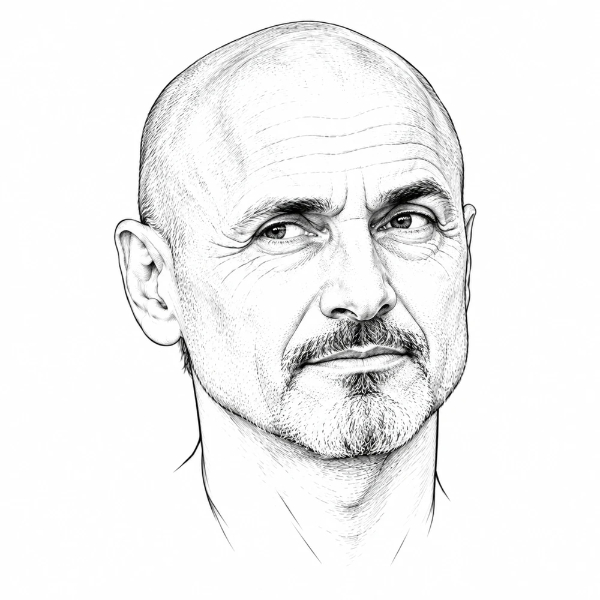
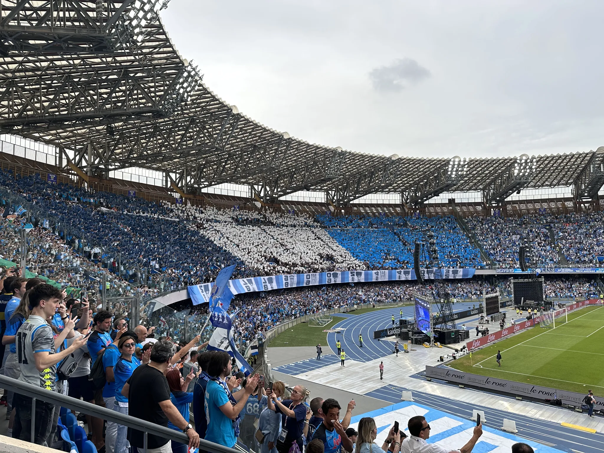
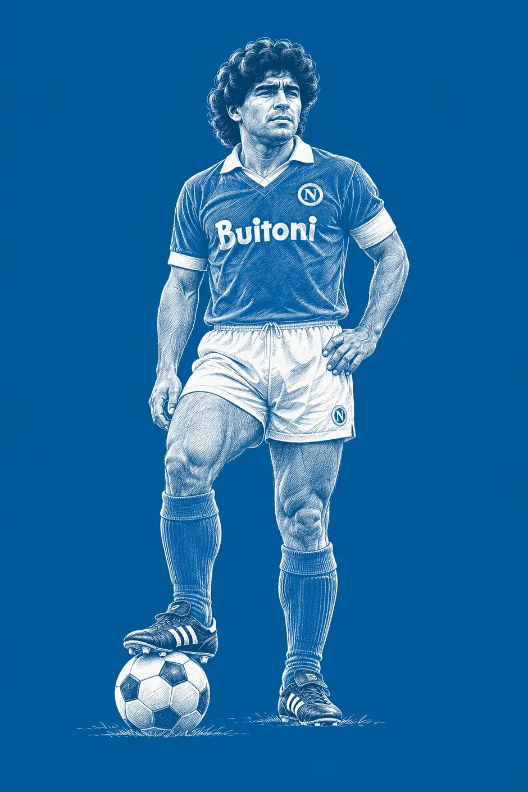
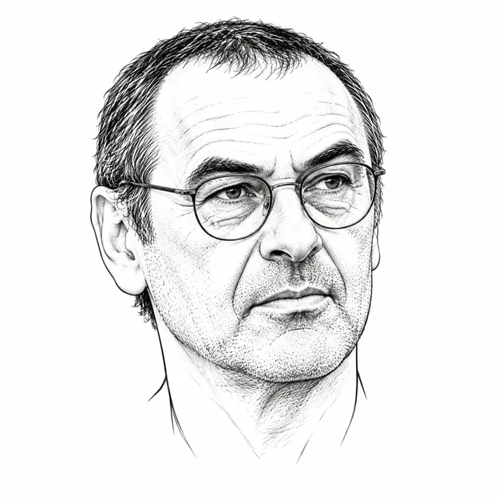
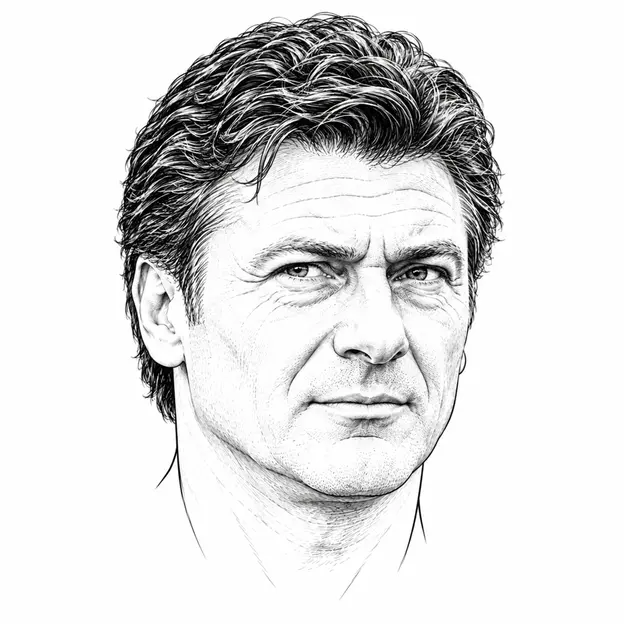

LA MIA FOTO · STADIO DIEGO ARMANDO MARADONAOLTRE I NOVANTA MINUTI
Una questione di appartenenza.
Il calcio è uno sport, il Napoli è affetto. È parlare per ore con papà, con gli amici, con chi tifa per le altre squadre. È sapere che per 38 volte all’anno, più le coppe, il mondo si ferma per 90 minuti. Più recupero. È la superstizione, a cui non credo, ma che funziona. È l’argomento per rompere il ghiaccio in un meeting. È la lettura delle notizie del calciomercato d’estate.
L’ho seguito dalle Bermuda, dalle Hawaii, da Tokyo, da Bali, da Los Angeles… Cambiano i posti e gli orari, ma gli orologi si fermano e si vede la partita.
Era il più umano degli dei

Giocatori e allenatori
I giocatori a cui ho voluto più bene
Li ho visti giocare. In ordine alfabetico, perché l’affetto non è una classifica.
| Giocatore | Presenze | Gol |
|---|---|---|
| Aglietti | 34 | 9 |
| Albiol | 236 | 6 |
| Callejón | 349 | 82 |
| Carbone | 40 | 10 |
| Cavani | 138 | 104 |
| Cruz | 98 | 14 |
| Di Lorenzo | 312 | 20 |
| Hamšík | 520 | 121 |
| Kim | 45 | 2 |
| Kvaratskhelia | 107 | 30 |
| Lavezzi | 188 | 48 |
| Maggio | 308 | 23 |
| McTominay | 83 | 27 |
| Mertens | 397 | 148 |
| Pecchia | 172 | 24 |
| Schwoch | 66 | 32 |
| Taglialatela | 203 | 0 |
| Zola | 136 | 36 |
Dati al 10 ottobre 2026. Campionati e coppe, amichevoli escluse. Per Carbone e Cruz: Benito Carbone e André Cruz. Fonte.
Gli allenatori

Maurizio Sarri

Walter Mazzarri
I bidoni
- Asanović
- Britos
- Calderón
- Crasson
- Cribari
- Dumitru
- Prunier
- Sesa
- El Principito Sosa
- Max Vieri
Partite e ricordi
30 APRILE 2023
Napoli–Salernitana 1–1
Un’atmosfera di festa, di amicizia, di fratellanza. I gol dell’Inter contro la Lazio ci avevano fatto sentire che lo scudetto era possibile. E poi l’arrivo del pullman allo stadio.
23 MAGGIO 2025
Napoli–Cagliari 2–0
Lo scudetto all’ultima giornata. L’avevo visto nei film, ma non avrei mai pensato che sarebbe toccato a noi. Una settimana di shock dopo Parma–Napoli e Inter–Lazio. E soprattutto tanto, tanto Pedro Pedro Pedro Peeeeeeeeeeeedro.
27 SETTEMBRE 2011 · CHAMPIONS LEAGUE
Napoli–Villarreal 2–0
Dopo San Benedetto del Tronto, Gela, Lanciano, Sassari, Giulianova… si ritorna in Champions.
19 DICEMBRE 2010
Napoli–Lecce 1–0
Una partita in cui non ero allo stadio, ma avrei voluto esserci. Napoli–Lecce, 1–0. Il gol di Cavani, con il commento di Auriemma.
Guarda su YouTube15 DICEMBRE 1991
La mia prima partita allo stadio
Napoli3 – 3Foggia
La mia prima partita allo stadio è stata Napoli–Foggia, il 15 dicembre 1991. Ero nei Distinti con mio padre, Massimo e Lorenzo De Siena. Finì 3–3.
Guarda gli highlights su YouTubeForza Napoli, sempre
← Torna a Sport